אתגר 90 · לבדיקה של נועם
כל המסכים והמצבים
31 מצבים של האתגר, לפי הסדר שהסוחר פוגש אותם: מה רואים, מתי זה קורה ומה נועם אומר. כל תמונה נפתחת בגדול בלחיצה, ו"לראות בהדמיה" פותח את אותו מצב בדמו. המספרים בתמונות הם מההודעה שלך מ-12.11, ובסוף יש את השאלות שעוד פתוחות.
הצטרפות יום רגיל באתגר פרסים דברים שקורים ביום לאורך הדרך סיום בטלפון שאלות פתוחות לפני שהסוחר נכנס לאתגר, ושלושת הצעדים של ההצטרפות
הצטרפות
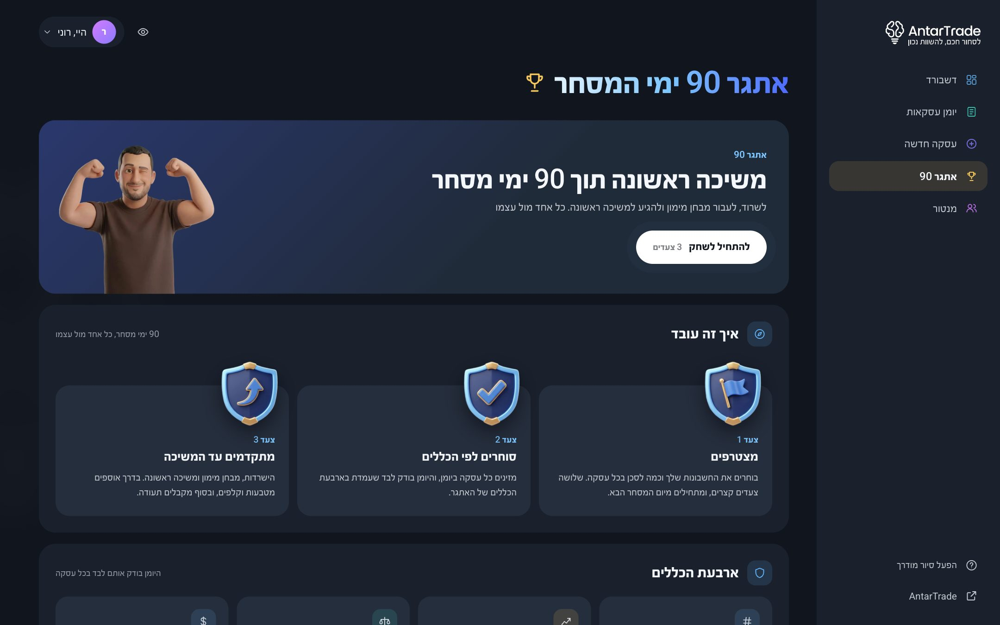
01 · הצטרפותעמוד האתגר לפני הצטרפות
מתי כל מי שעוד לא הצטרף ולוחץ על "אתגר 90" בתפריט. מה רואים נועם מציג את האתגר: משיכה ראשונה תוך 90 ימי מסחר, איך זה עובד בשלושה צעדים, ארבעת הכללים, וכפתור "להתחיל לשחק". לראות בהדמיה
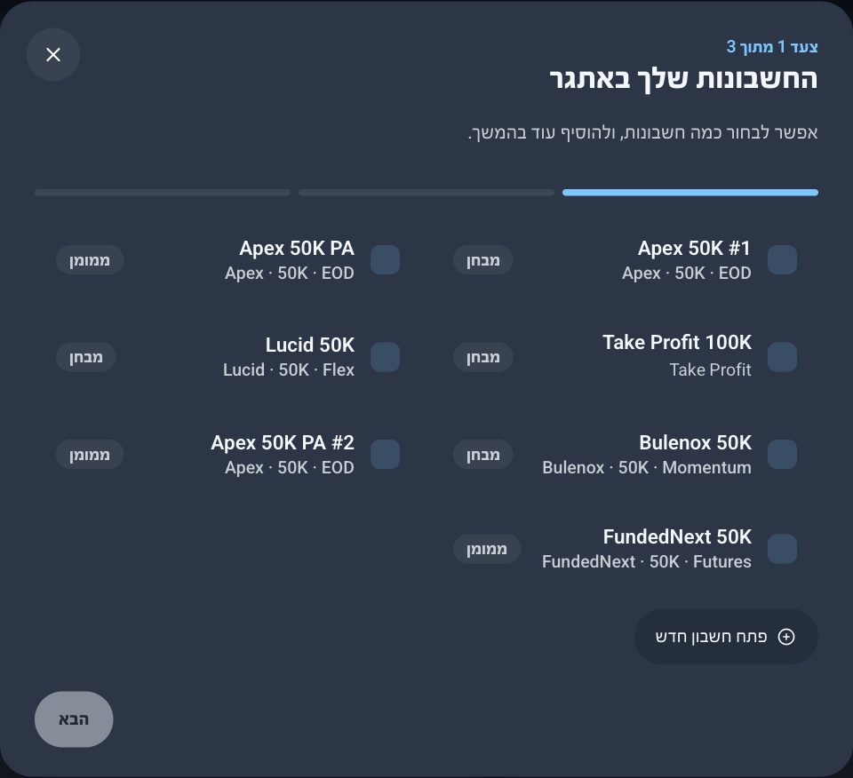
02 · הצטרפותצעד 1 · בוחרים חשבונות
מתי אחרי "להתחיל לשחק". מה רואים בוחרים אילו חשבונות נכנסים לאתגר. כל חשבון הוא לב במשחק. לראות בהדמיה
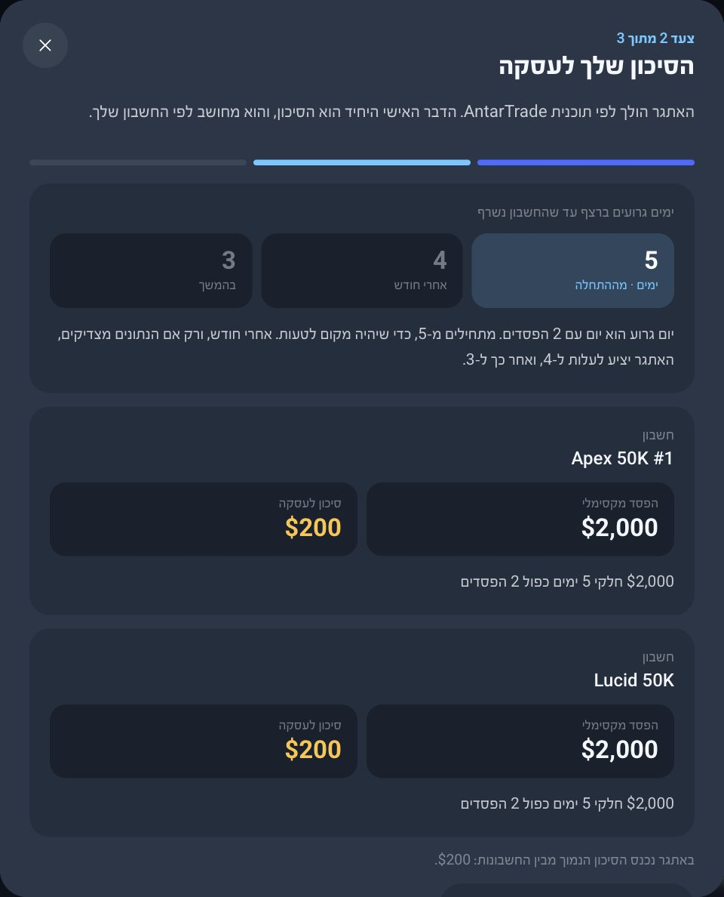
03 · הצטרפותצעד 2 · הסיכון לעסקה
מתי אחרי שבחרו חשבון. מה רואים הסיכון מחושב לבד: ההפסד המקסימלי של החשבון חלקי 5 ימים גרועים, כפול 2 הפסדים ביום. מתחילים מ-5 ימים גרועים, אחרי חודש האתגר יכול להציע לעלות ל-4, ובהמשך ל-3. כשיש כמה חשבונות, נכנס הסיכון הנמוך מביניהם. לראות בהדמיה
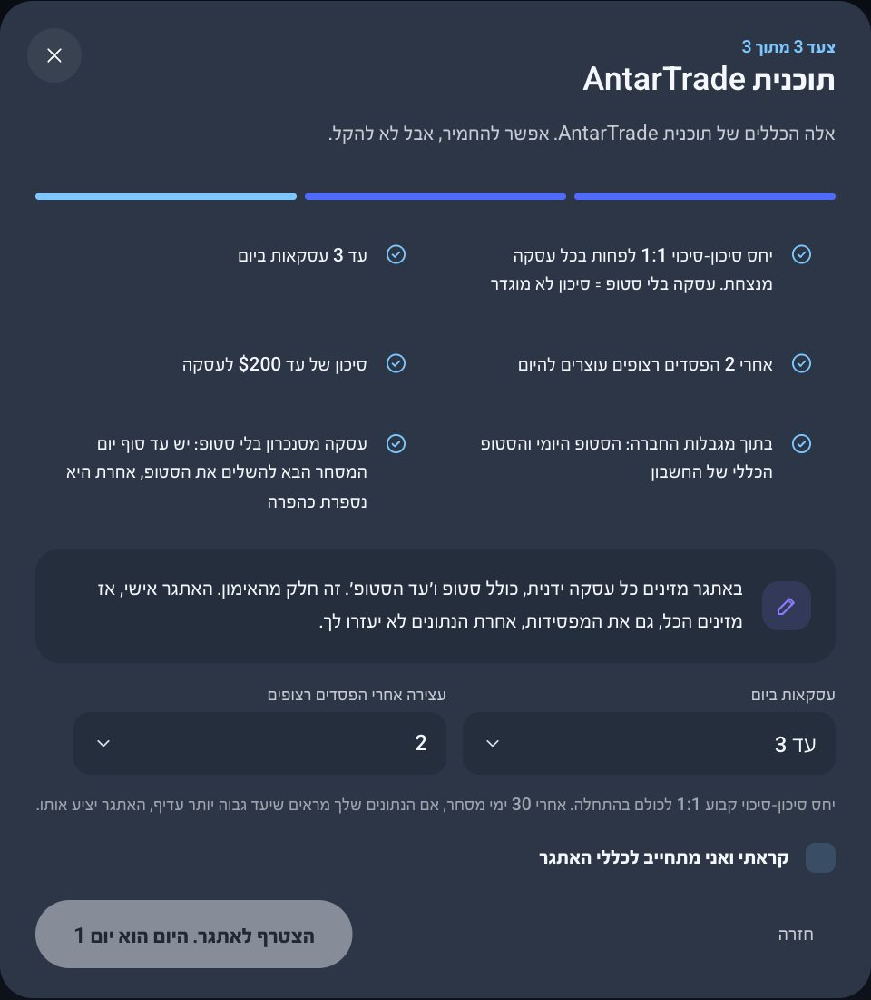
04 · הצטרפותצעד 3 · תוכנית AntarTrade
מתי הצעד האחרון לפני ההצטרפות. מה רואים הכללים של האתגר לפי תוכנית AntarTrade. אפשר רק להחמיר. אם בתוכנית ביומן יש כלל מחמיר יותר, האתגר הולך לפיה, ויש על זה הערה. לראות בהדמיה מה הסוחר רואה כל יום, כאן ביום 23
יום רגיל באתגר
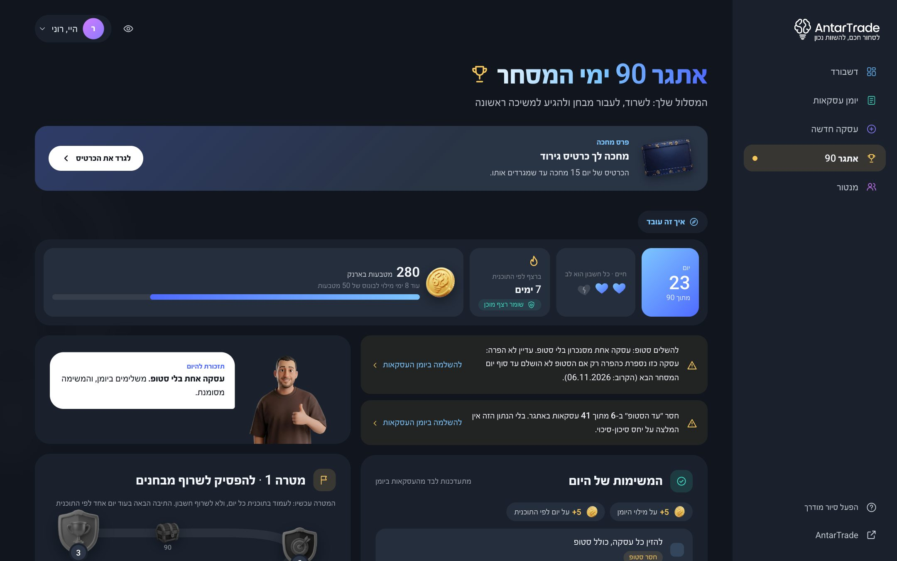
05 · יום רגיל באתגרראש העמוד
מתי כל כניסה לאתגר. מה רואים מלמעלה: פרס שמחכה (אם יש), הפס העליון, נועם, האזהרות מהיומן, המשימות של היום והמפה. מה נועם אומר תזכורת להיום עסקה אחת בלי סטופ. משלימים ביומן, והמשימה מסומנת.
לראות בהדמיה
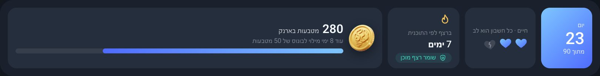
06 · יום רגיל באתגרהפס העליון
מתי תמיד, בראש העמוד. מה רואים יום X מתוך 90. החיים: לב לכל חשבון, ולב שבור לחשבון שנשרף. הרצף לפי התוכנית, ואם שומר הרצף מוכן. המטבעות בארנק, עם פס לבונוס הבא על רצף מילוי היומן. לראות בהדמיה
07 · יום רגיל באתגרהמשימות של היום והתיבה הבאה
מתי כל יום מסחר. מה רואים המשימות מתעדכנות לבד מהעסקאות ביומן: 5 מטבעות על מילוי היומן ו-5 על יום לפי התוכנית. מתחת יש כפתור "לא סחרתי היום", ואת התיבה הבאה עם פס של כמה ימים לפי התוכנית כבר נאספו. הימים נספרים בסך הכול, בלי איפוס. לראות בהדמיה
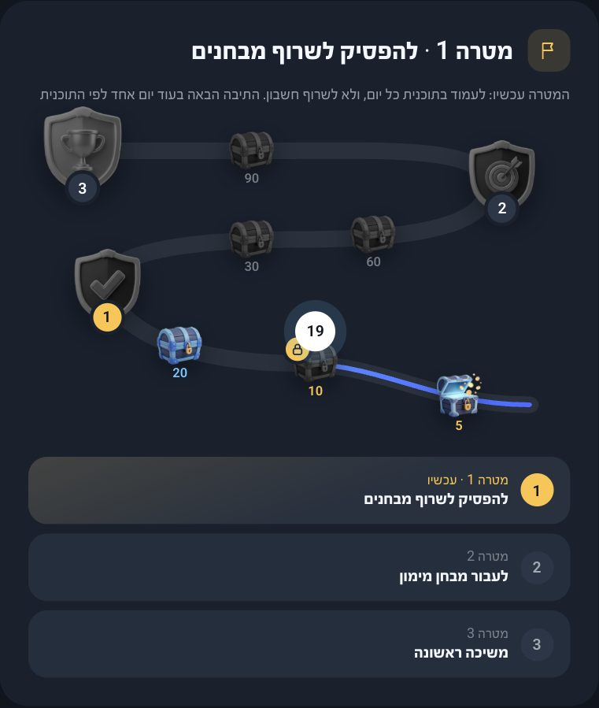
08 · יום רגיל באתגרהמפה
מתי תמיד, ליד המשימות. מה רואים שלוש מטרות על הדרך: להפסיק לשרוף מבחנים, לעבור מבחן מימון, ומשיכה ראשונה. התיבות עומדות על הדרך עם מספר הימים שלהן. מטרה שהושגה מקבלת וי, ומתחת למפה יש את שמות המטרות, אחת בכל שורה. לראות בהדמיה
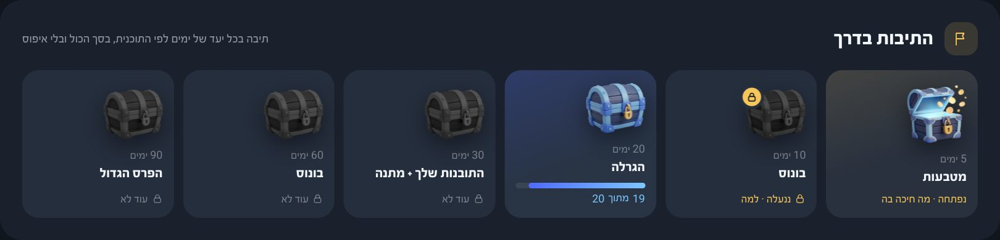
09 · יום רגיל באתגרהתיבות בדרך
מתי תמיד, מתחת למפה. מה רואים שש תיבות: 5, 10, 20, 30, 60 ו-90 ימים לפי התוכנית. על כל תיבה כתוב מה הסוג שלה. כל תיבה היא באחד מארבעה מצבים: נפתחה, הבאה בתור (עם פס), נעולה, או עוד לא. לחיצה על תיבה פותחת מה היה בה או למה היא נעולה. לראות בהדמיה
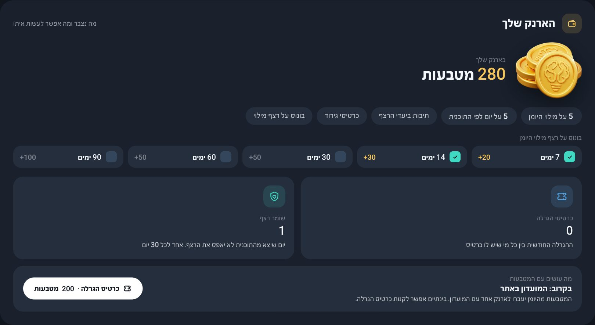
10 · יום רגיל באתגרהארנק
מתי תמיד, מתחת לתיבות. מה רואים ממה מורכבים המטבעות, הבונוסים על רצף מילוי היומן (7, 14, 30, 60 ו-90 ימים), כרטיסי ההגרלה, שומר הרצף, ומה אפשר לקנות במטבעות. לראות בהדמיה תיבות וכרטיסי גירוד, מהרגע שהם מחכים ועד שהם נפתחים
פרסים
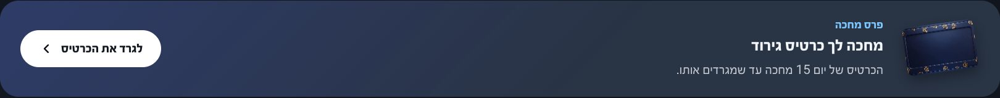
11 · פרסיםפרס מחכה · הפס בראש האתגר
מתי יש תיבה שהגיעו אליה או כרטיס גירוד שעוד לא גורד. מה רואים חדש מ-13.11. הדבר הראשון בעמוד, עם כפתור לכל פרס. "לפתוח את התיבה" גולל לתיבה ופותח אותה לבד, ו"לגרד את הכרטיס" גולל לכרטיס. כשמחכים שני פרסים כתוב "מחכים לך 2 פרסים". לראות בהדמיה
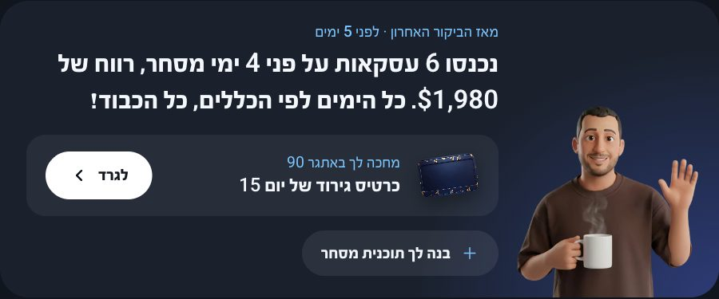
12 · פרסיםפרס מחכה · הכרטיס של נועם בדשבורד
מתי אותו רגע, בדשבורד של היומן. מה רואים שורה בתוך הכרטיס של נועם: "מחכה לך באתגר 90", מה מחכה, וכפתור שמוביל ישר לפרס. לראות בהדמיה
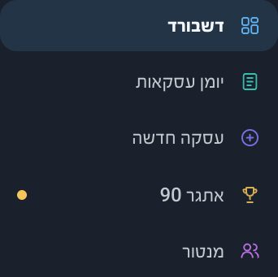
13 · פרסיםפרס מחכה · נקודה בתפריט
מתי אותו רגע, מכל עמוד ביומן. מה רואים נקודה זהב ליד "אתגר 90" בתפריט. היא יורדת אחרי שפותחים את הפרס. לראות בהדמיה
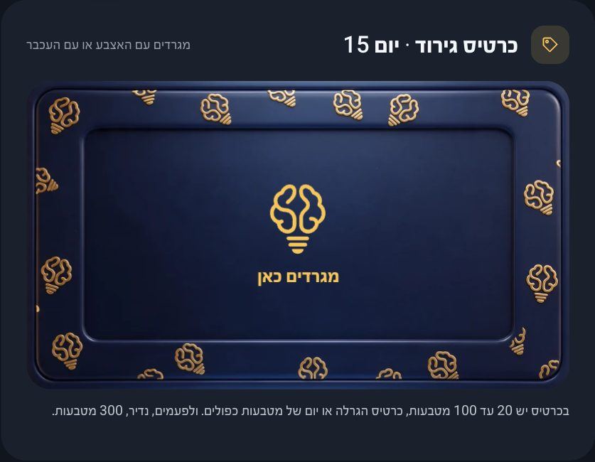
14 · פרסיםכרטיס גירוד
מתי ביום 15, ביום 45 וביום 75. הכרטיס מחכה עד שמגרדים אותו. מה רואים מגרדים עם האצבע או עם העכבר. בחצי מגורד הפרס נכנס לארנק. בכרטיס יש 20 עד 100 מטבעות, כרטיס הגרלה או יום של מטבעות כפולים, ולפעמים, נדיר, 300 מטבעות. לראות בהדמיה
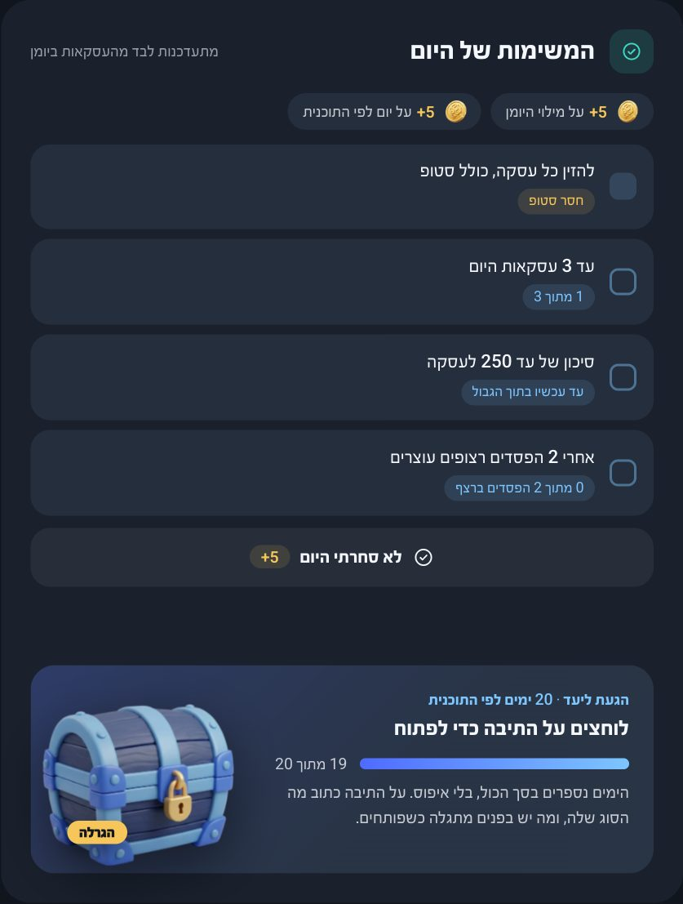
15 · פרסיםתיבה מוכנה לפתיחה
מתי ביום שבו סך הימים לפי התוכנית מגיע ליעד. מה רואים התיבה בכרטיס המשימות נדלקת, והפס מלא. לוחצים על התיבה כדי לפתוח. לראות בהדמיה
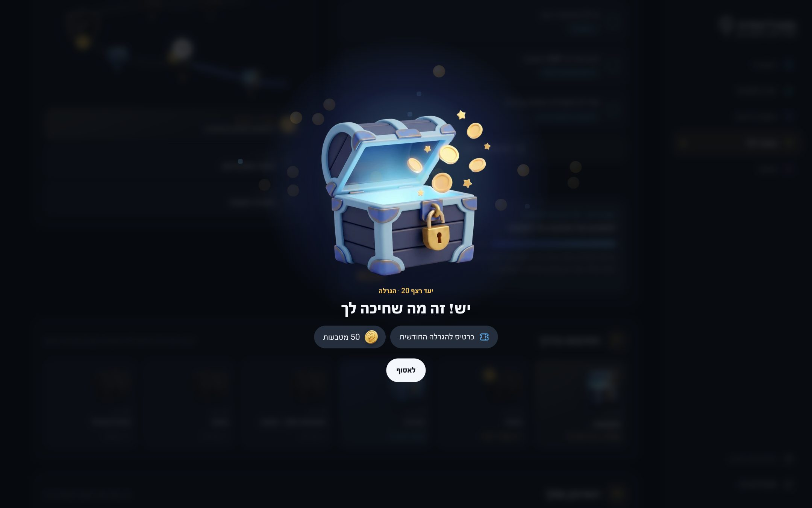
16 · פרסיםפתיחת התיבה
מתי לוחצים על התיבה. מה רואים התיבה עפה למרכז, נפתחת, מטבעות קופצים ממנה, וכתוב "יש! זה מה שחיכה לך" עם הפרסים. כפתור "לאסוף" מכניס אותם לארנק. לראות בהדמיה
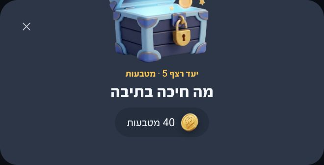
17 · פרסיםמה חיכה בתיבה
מתי לחיצה על תיבה שכבר נפתחה. מה רואים חלון קטן עם מה שהיה בתיבה. לראות בהדמיה
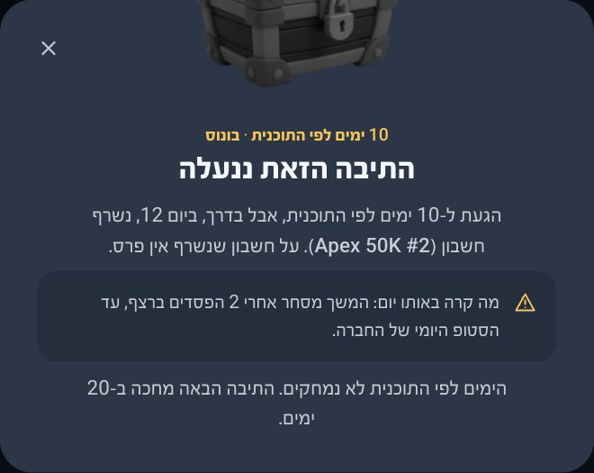
18 · פרסיםתיבה נעולה
מתי הגיעו ליעד, אבל בין התיבה הקודמת לזו נשרף חשבון. מה רואים על חשבון שנשרף אין פרס. החלון מסביר באיזה יום נשרף החשבון ומה קרה בו, ושהימים לפי התוכנית לא נמחקים: התיבה הבאה מחכה ביעד הבא. לראות בהדמיה רגעים שמשנים את מה שנועם אומר
דברים שקורים ביום
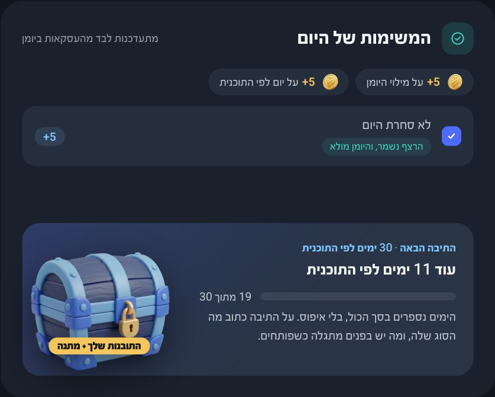
19 · דברים שקורים ביוםלא סחרתי היום
מתי הסוחר לוחץ על "לא סחרתי היום". מה רואים 5 מטבעות על מילוי היומן, והרצף נשמר. לראות בהדמיה
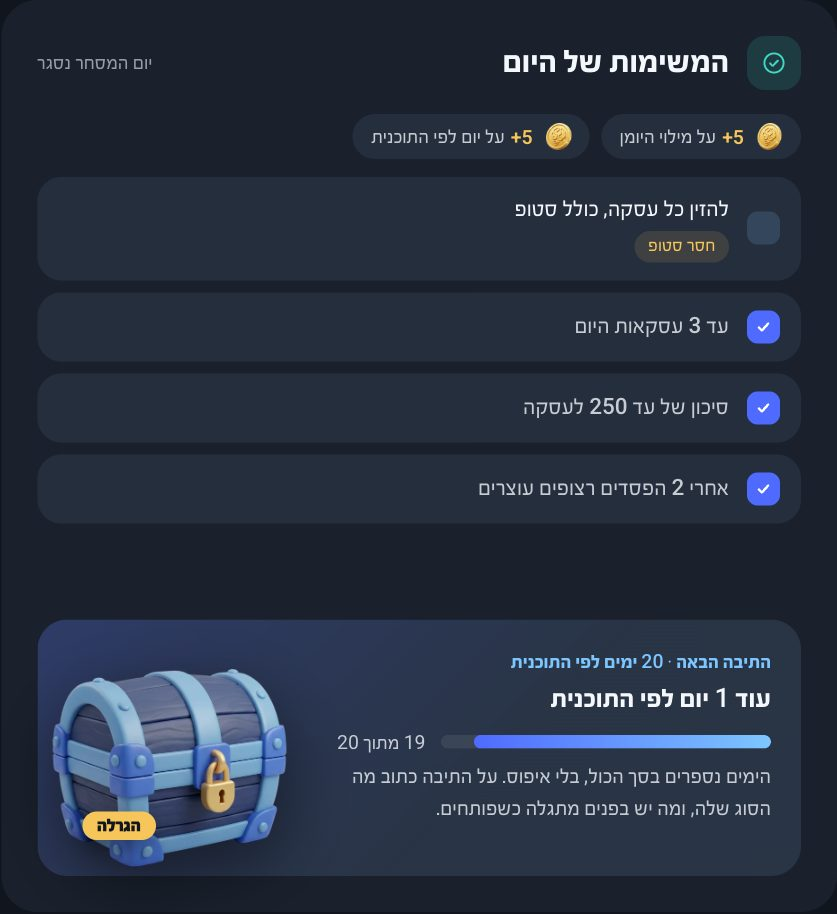
20 · דברים שקורים ביוםסוף יום המסחר
מתי כשיום המסחר נסגר. מה רואים המשימות של היום נסגרות לפי העסקאות ביומן, ואי אפשר לסמן אותן יותר. לראות בהדמיה
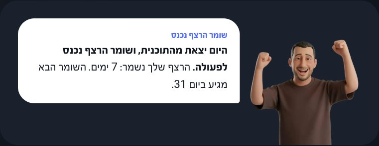
21 · דברים שקורים ביוםשומר הרצף נכנס
מתי יום שיצא מהתוכנית, כשיש שומר רצף. מה רואים הרצף לא מתאפס. שומר אחד לכל 30 יום, ועוד אחד בתיבה של 10 ימים. מה נועם אומר שומר הרצף נכנס היום יצאת מהתוכנית, ושומר הרצף נכנס לפעולה. הרצף שלך נשמר: 7 ימים. השומר הבא מגיע ביום 31.
לראות בהדמיה
22 · דברים שקורים ביוםלב נשבר
מתי חשבון נשרף. מה רואים הלב של החשבון נסדק ונשבר בפס העליון, ונועם מדבר. מה נועם אומר לב נשבר איבדת חשבון, לא את הדרך. נשאר לך לב אחד, וממשיכים מיום 23.
לראות בהדמיה שלוש המטרות של נועם, לפי הסדר שלו: לא לשרוף, לעבור, משיכה
לאורך הדרך
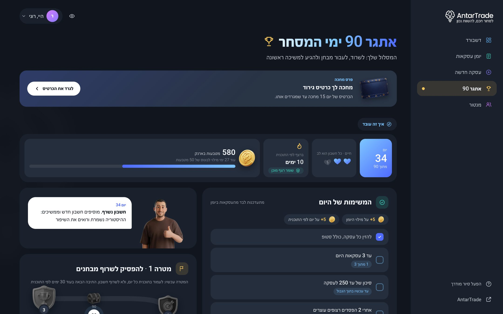
23 · לאורך הדרךיום 34 · אחרי חשבון שנשרף
מתי חשבון נשרף ב-30 ימי המסחר האחרונים. מה רואים מטרה 1 מחכה ל-30 יום בלי חשבון שנשרף. נועם מציע להוסיף חשבון חדש. מה נועם אומר יום 34 חשבון נשרף. מוסיפים חשבון חדש וממשיכים: ההיסטוריה נשמרת ורואים את השיפור
לראות בהדמיה
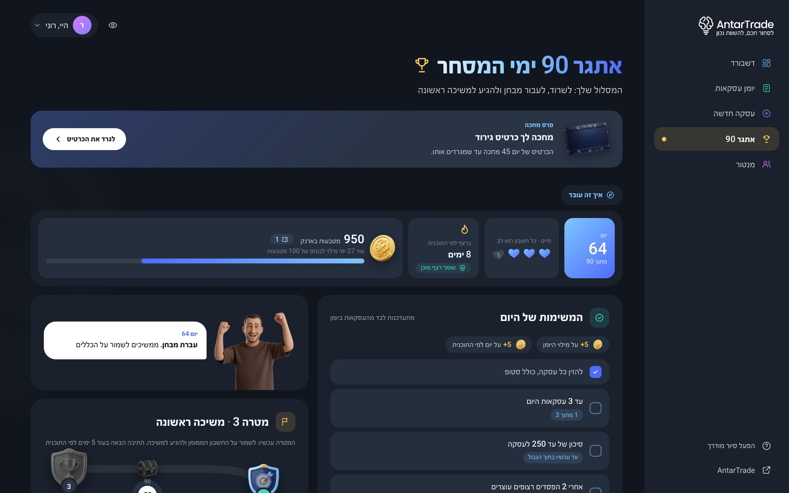
24 · לאורך הדרךיום 64 · אחרי מבחן שעבר
מתי עבר מבחן מימון. מה רואים מטרה 2 מסומנת, ועכשיו הולכים למשיכה. מה נועם אומר יום 64 עברת מבחן. ממשיכים לשמור על הכללים
לראות בהדמיה
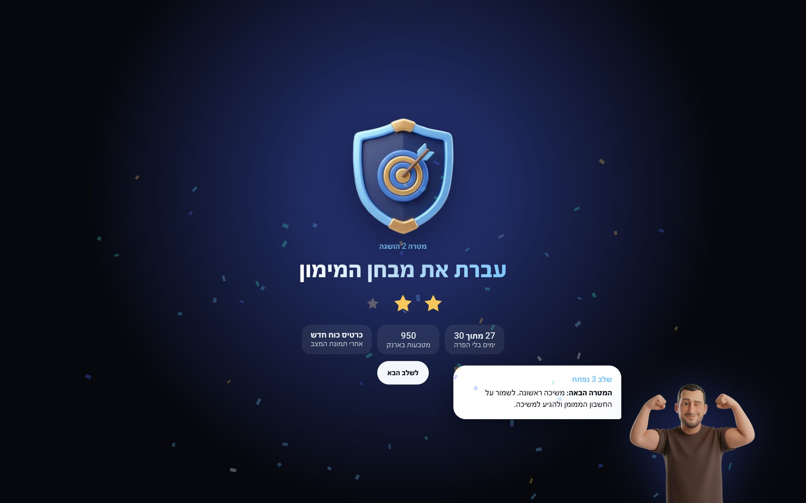
25 · לאורך הדרךמטרה הושגה
מתי הרגע שבו מטרה מתקיימת. מה רואים מסך מלא: המגן של המטרה, כוכבים לפי העמידה בכללים, כמה ימים בלי הפרה, המטבעות, ומה המטרה הבאה. מה נועם אומר המטרה הבאה: משיכה ראשונה. לשמור על החשבון הממומן ולהגיע למשיכה.
לראות בהדמיה יום 90
סיום
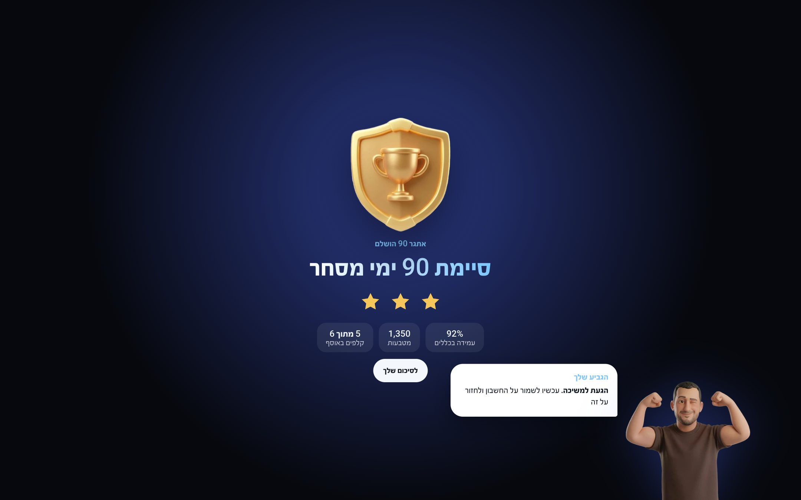
26 · סיוםרגע הסיום
מתי בפעם הראשונה שנכנסים ביום 90. מה רואים מסך מלא עם הגביע, כוכבים, אחוז העמידה בכללים, המטבעות והקלפים באוסף. מה נועם אומר הגעת למשיכה. עכשיו לשמור על החשבון ולחזור על זה.
לראות בהדמיה
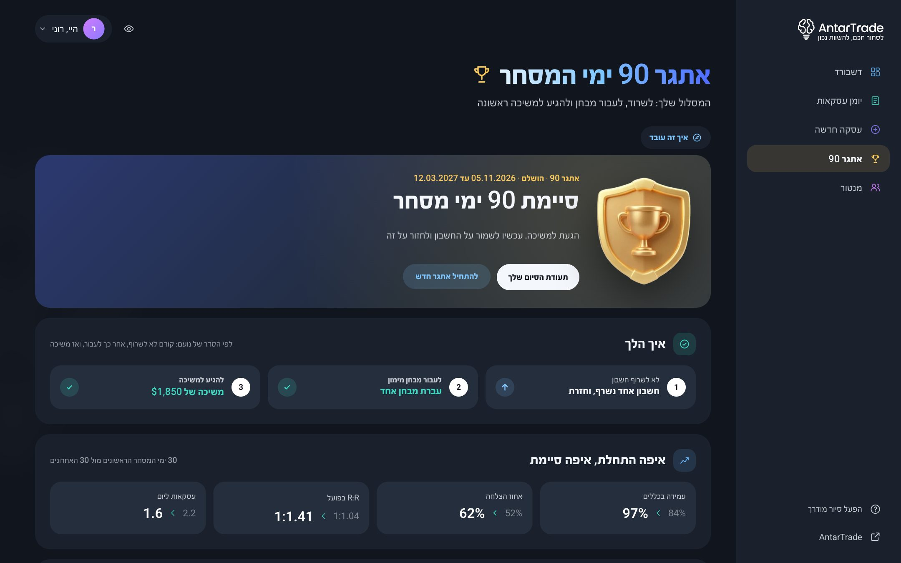
27 · סיוםהסיכום
מתי אחרי רגע הסיום. מה רואים איך הלך לפי הסדר של נועם (לא לשרוף, לעבור, משיכה), 30 הימים הראשונים מול 30 האחרונים, ותעודת סיום. "להתחיל אתגר חדש" שומר את האוסף. לראות בהדמיה
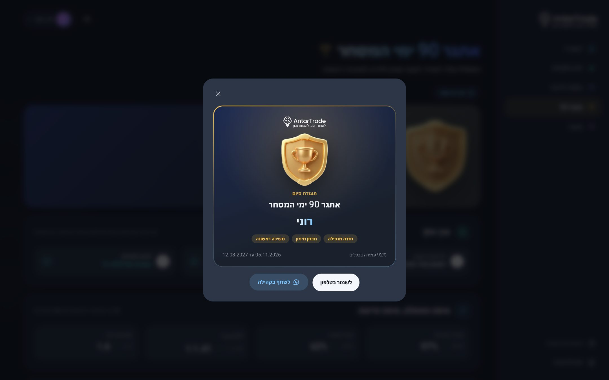
28 · סיוםתעודת הסיום
מתי לחיצה על "תעודת הסיום שלך". מה רואים תעודה עם השם, התאריכים והמטרות שהושגו. אפשר לשמור או לשתף בקהילה. לראות בהדמיה מחכה להחלטה שלך
שאלות פתוחות 1 כמה מטבעות ואילו מתנות בכל תיבה, בכל כרטיס גירוד ובבונוסים על רצף המילוי. כל המספרים בתמונות הם מההודעה שלך מ-12.11, ונחליף אותם אחרי יום ראשון.
2 תיבת 90 היום היא נפתחת רק אחרי 90 ימים לפי התוכנית, לא ביום 90 של האתגר. ככה כולן עובדות. זה מה שאתה רוצה?
3 תיבה נעולה תיבה שהגיעו אליה כשבדרך נשרף חשבון ננעלת, והימים לא נמחקים. מתאים לך?
4 תיבות הישגים אם יהיו תיבות על מבחן שעבר ועל משיכה ראשונה, נוסיף להן מצבים כאן.
5 הנוסח של פרס שמחכה "פרס מחכה", "מחכה לך כרטיס גירוד" ו"מחכה לך באתגר 90" בכרטיס שלך. אפשר לשנות לנוסח שלך.
6 כרטיס הגרלה במטבעות הכפתור "כרטיס הגרלה · 200 מטבעות" נשאר בארנק עד שהבדיקה החוקית תיסגר.
7 מטבעות או נקודות באתגר כתוב מטבעות. במועדון שלך באתר כתוב נקודות. כדאי שם אחד לשניהם, כי זה ארנק אחד.